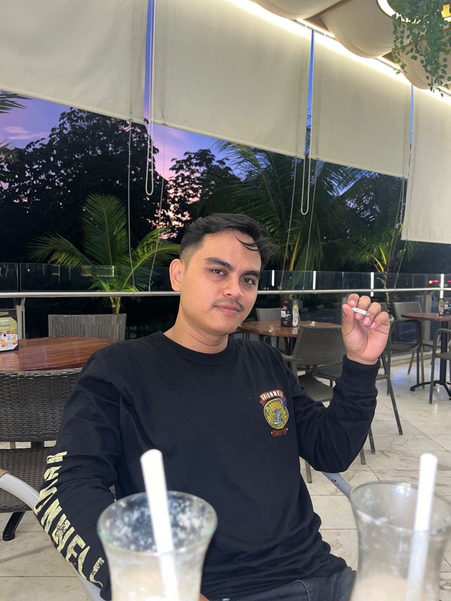

Apri Yanto
INTRODUCTION
Hello, my name is Apriyanto. I graduated from SMK Ma'arif NU 1 Ajibarang in 2017 with an engineering education background. I have work experience as a body and paint employee at PT. Berlian Utama Raya for 6 months, and as an automotive air conditioning maintenance technician at PT. Toyoga Majutera Tama for 2 years, assigned to the PT. Indomobil Nissan Datsun workshop. I am a disciplined, responsible, and highly motivated individual who always wants to learn new things, especially in the automotive field.
Now I work at PT. Honda Arista Depok and have been working there for 4 years. I started registering for college in 2022 to develop insight and increase knowledge. I chose Informatics Engineering because today's cars have advanced in features such as interior, exterior, and engine, and are now growing rapidly from Hybrid systems into Electric Vehicles (EV). That is the reason I chose Informatics Engineering.
Jika ingin mengenal lebih dalam, silakan klik sosial media saya: